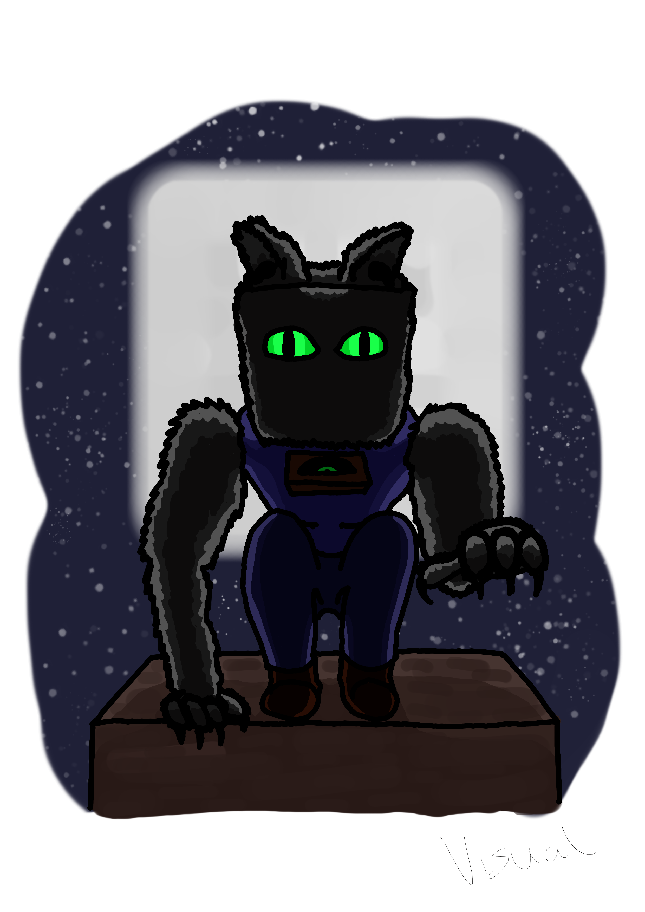
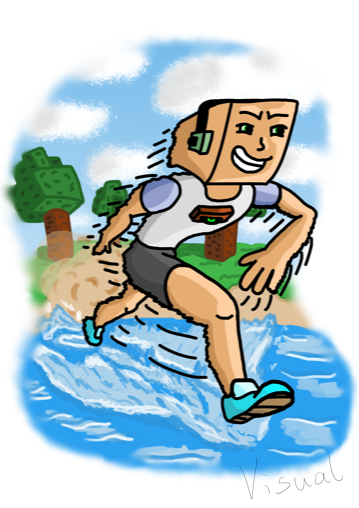
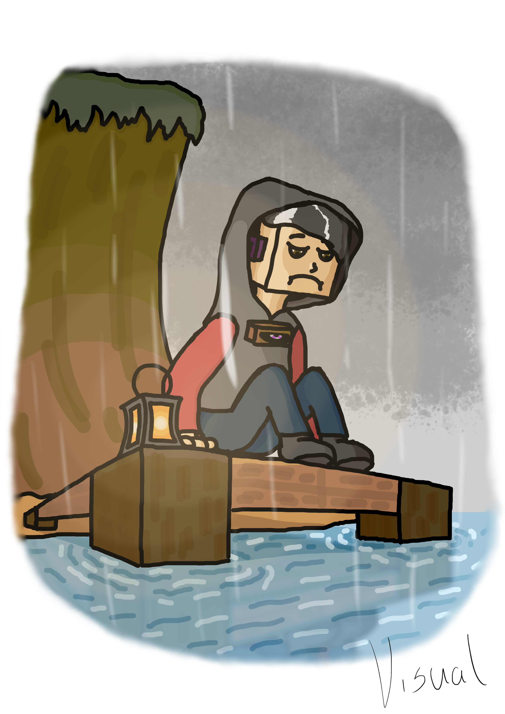
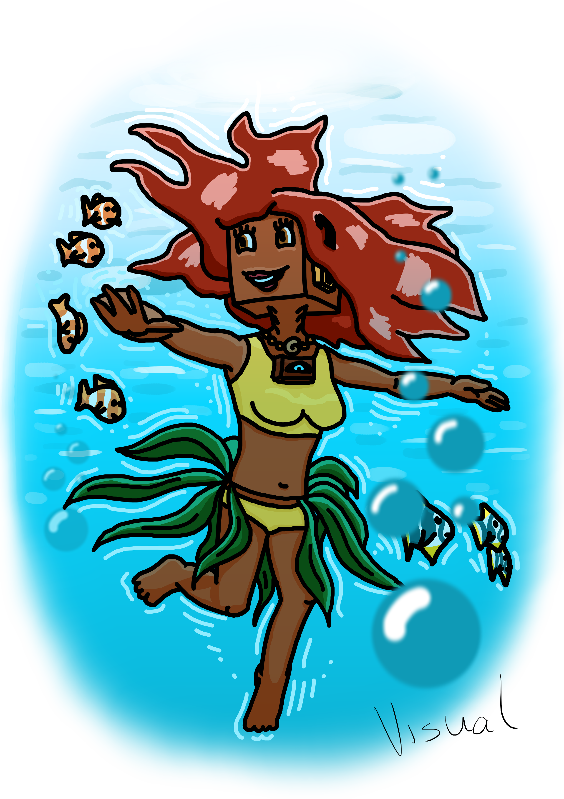

Music discs
CAT
Author of music: C418
This disc gives you powers of a cat (quite similar to Feline’s powers).
{kind=link}
Pros |
Cons |
|---|---|
Speed - you’re faster than others |
Weakness - you take damage (two more points) |
High jump - while sprinting you can jump higher |
Weak arms - you can’t mine natural stone if there are more than 2 stone blocks adjacent to it. Strength potions allow you to mine normally |
Nocturnal - you can see better at night |
|
Four feet - you don’t take fall damage |
|
Sharp claws - you deal more critical damage with your sharp claws, the power has a cooldown 3 seconds |
This power is available for versions 1.17 and later.
BLOCKS
Author of music: C418
This disc turns you into a stone golem.

Pros |
Cons |
|---|---|
Fast breaking - you can mine four times faster! |
Slowness - you’re slower than others |
Stone breaker - you’re able to mine hard blocks with your bare hands(this includes not only natural stone, but also ores, bricks of any kind, sandstone, etc.). Still, you can’t mine obsidian or bedrock. |
Unwieldy - you can’t use shields |
Further reach - you can reach 2 blocks further away |
Heavy - you sink in water |
Strong punch - you deal twice more damage |
|
Natural armor - you have 6 points of natural armor |
This power is available for versions 1.17 and later.
CHIRP
Author of music: C418
This disc gives you wings. Basically, you are like an Elytrian.

Pros |
Cons |
|---|---|
Elytra flight - you’ve got elytra wings |
Brittle bones - you take more kinetic damage |
Gain air - you can launch yourself up, the power has 20 seconds of cooldown |
Claustrofobia - when in small, claustrophobic spaces, you get weakness and slowness |
Aerial combatant - you deal more damage while attacking from the air |
This power is available for versions 1.17 and later.
FAR
Author of music: C418
This disc makes you as fast as lightning.
{kind=link}
Pros |
Cons |
|---|---|
Sonic speed - while sprinting, you’re 5x faster than a normal human |
Exhausts faster - you consume more energy while running, so you exhaust much faster |
Jump boost - while sprinting, you jump a bit higher |
|
Walks on water - while sprinting, you can walk on the surface of water |
|
Dash - you’re able to dash forward and backward. In order to dash, you must press a [secondary active key] button and quickly press [forward] button ([W]) to dash forward or [back] button ([S]) to dash backward |
This power is available for versions 1.17 and later.
MALL
Author of music: C418
This disc turns you into an enderman-like creature.

Pros |
Cons |
|---|---|
Teleportation - you’re able to teleport. There are two types of teleportation: a) instant, which you can activate by pressing [secondary key] button, allows you to instantly teleport max 32 blocks away in the direction you’re looking (horizontally); b) with ender pearl, works the same way as Enderian’s pearl, to throw a pearl press a [secondary key] button while sneaking. The second type of teleportation is recommended while being underground, however you can also use the first type if you want to get out from the underground back to the surface (using it in the Nether means you teleport above the bedrock ceiling). The power has 6 seconds of cooldown. |
Hydrophobia - water and rain deals you damage. Only water protection enchantment makes you resistant to water. |
Target teleportation - when you hit the target, there’s a 20% chance that it will teleport 10 blocks up from its position |
Tall - you’re 3 blocks tall and it’s problematic for you to go through holes smaller than 2.5 blocks. This feature is available on versions 1.21 and later. |
Teleporting arrows - you can shoot arrows which when they hit a target they’ll teleport it in front of you. These arrows leave a trail of purple particles behind. Only normal arrows can be used as teleporting arrows (spectral arrows will not work). If a teleporting arrow successfully hits the target you can shoot the next one after 20 seconds. |
This power is available for versions 1.17 and later.
MELLOHI
Author of music: C418
This disc spoils your mood.
{kind=link}
Pros |
Cons |
|---|---|
Poisonous - when you hit a target, it gets poisoned for 5 seconds |
Bad luck - you have instant bad luck and bad omen |
Killjoy - you make others sad. Everyone in the range of 5 blocks gets weakness, slowness and bad luck |
Slowness - you’re slower than others |
Potion immunity - you’re resistant to certain effects: hunger, poison |
Potion immunity - you’re resistant to certain effects: strength, speed, jump boost, resistance, luck, hero of the village |
Thunder - you summon a thunderstorm when you start playing the disc. As the music stops playing, the thunderstorm goes away |
This power is available for versions 1.17 and later.
STAL
Author of music: C418
This disc turns you into an astute detective.

Pros |
Cons |
|---|---|
Observant - you’re able to see entities through walls in the range of 16 blocks. They get a white outline as if they had a glowing effect on them. |
No cons |
Perfect shooter - you deal additional 4.5 damage points with arrows |
|
Fit - you exhaust slower |
This power is available for versions 1.17 and later.
STRAD
Author of music: C418
This disc unites you with the sea.
{kind=link}
Pros |
Cons |
|---|---|
Good swimmer - you can swim faster |
More fire damage - you take 2x more damage from fire |
Pulmonary function - you can hold your breath for a longer time |
Aquatic - you qualify as an aquatic creature which means you take more damage from tridents with impaling enchantment |
Torpedo - you can launch yourself in the direction you’re looking. It allows you to jump out of water like a dolphin or boost yourself underwater |
|
Water vision - you see better underwater |
|
Treasure hunter - while digging sand by the shore or at the bottom of a water reservoir (a sand block must be adjacent to water), you have 5% chance of finding a nautilus shell and 0.1% of finding a heart of the sea |
|
Underwater fighter - you deal 2x more damage to underwater creatures |
This power is available for versions 1.17 and later.
WARD
Author of music: C418
This disc turns you into a knight from a retro RPG game.

Pros |
Cons |
|---|---|
Swordsman - you have mastered the combat techniques. Your attack cooldown is much shorter (5 additional points per tick) |
No natural regen - you can’t regenerate naturally. You need to use healing potions, regeneration potions, golden apples or your healing ability |
Tough skin - you have 6 points of natural armor and take 2x less damage |
Bad archer - you can’t use bows and crossbows |
Healing - you’re able to heal yourself by dealing a fatal damage that is greater than 9 points |
This power is available for versions 1.17 and later.
WAIT
Author of music: C418
This disc allows you to manipulate time.
Pros |
Cons |
|---|---|
Time bubble - you can slow down time. Entities in the range of 16 blocks (except you) will move 2x slower. To do this, press the [secondary key] button |
Insomnia - you are unable to sleep |
Back in time - you can go 10 seconds back in time. First you need to press the [secondary key] button while crouching to set up the timer. When 10 seconds pass, you will teleport back to the place you were 10 seconds earlier |
|
Time travel - you can accelerate the time. This means the daylight cycle will be faster, trees and crops will grow quickly, copper blocks will oxidise in a matter of seconds, etc. In order to do this you must hold a clock in your hand |
This power is available for versions 1.17 and later.
PIGSTEP
Author of music: Lena Raine
This disc changes you into a creature from the Nether.
Pros |
Cons |
|---|---|
Fire immunity - you don’t take fire damage |
Hydrophobia - water and rain deals you damage. Only water protection enchantment makes you resistant to water |
Fireball - use the [secondary key] to shoot a fireball |
|
Lava swimmer - you’re able to swim fast in lava. You can also see better in lava |
This power is available for versions 1.17 and later.
OTHERSIDE
Author of music: Lena Raine
This disc teleports you to a new dimension: Otherside. It’s the origin place of all Melomanians.
Pros |
Cons |
|---|---|
Enter Otherside - when you play this disc using [Primary key] you are taken to the Otherside. As the disc stops playing you go back to the Overworld |
No cons |
You can read more about Otherside dimension in Otherside section.
This power is available for versions 1.18 and later.
RELIC
Author of music: Aaron Cherof
This disc summons the spirit of an ancient traveler and shaman, which possesses you.
Pros |
Cons |
|---|---|
Precious treasure - you have a higher chance of getting better loot from chests and suspicious sand/gravel |
Blurry vision - your connection with the shaman from the past allows him to see your present days (he can see the future). Unfortunately, his vision is very blurry and you also can’t see very well |
Discount - you get discounts from villagers, as you are a respected trader. You have “Hero of the village IV”. However, if you have “Bad omen” on you, you don’t get discounts |
Arch nemesis - in the past, the shaman was a nemesis of illagers. You get 2x more damage from illagers |
Pharaoh’s curse - you can cast a spell of Pharaoh’s curse on other players within a distance of 10 blocks. The curse causes nausea for 40 seconds |
|
Pitcher plant trap - you can trap an opponent inside a pitcher plant. Hold a pitcher pod in your hand and right click on the opponent. It will be trapped inside a pitcher plant and get poisoned. You can free someone from the trap by destroying a pitcher plant |
This power is available for versions 1.20 and later.
CREATOR
Author of music: Lena Raine
This disc changes you into an industrial automaton.
Pros |
Cons |
|---|---|
Crafter head - your head becomes a crafter (this means you can’t wear a helmet, though). By pressing [Secondary key] you can open a 3x3 crafting table. |
Redstone consumption - you are an automaton and your energy source is redstone. Your hunger bar gets drained quickly and you need to eat redstone (or redstone blocks) to fill it up. When the bar gets empty you can’t move. Also you can’t eat any food. |
New recipies - you have greater knowlegde about crafting. Your recipe book is increased by new items. You can check their recipies in Crafting recipcies section. |
Slowness - you are slower than others |
Heavy - you sink in water |
This power is available for versions 1.21 and later.
CREATOR (MUSIC BOX)
Author of music: Lena Raine
This disc changes you into a figurine from a music box.
Pros |
Cons |
|---|---|
New recipies - you have greater knowlegde about crafting. Your recipe book is increased by spawn eggs. You can check their recipies in Crafting recipcies section. |
Rotating - while not moving you are rotating like a figurine from a music box. |
Small - your height is one block. |
Weak - you get twice more damage and can’t hurt others. |
No exhaustion - you don’t get exhausted and don’t need to eat. |
This power is available for versions 1.21 and later.
PRECIPICE
Author of music: Aaron Cherof
This disc teaches you how to control the wind. You become a monk from an air temple ;)
Pros |
Neutral |
Cons |
|---|---|---|
Wind charge - by pressing [Secondary key] while standing on the ground you can shoot a wind charge. |
Vegetarian - the monks from air temple are vegetarians. You can’t eat meat. |
Weakness - you have got a permanent weakness effect which means that you deal less melee damage. |
Air scooter - by pressing [Secondary key] after you jump you can summon an air scooter. You can ride it as long as an indication bar is visible. Also you can dismount the scooter by pressing [Shift key]. If you bump into a wall the scooter will disappear. |
||
Tornado - when you [Right click] an entity with a breeze rod in your hand, you can summon a tornado which will launch this entity high in the air. After that the breeze rod disappears from your inventory. |
||
Like a feather - you’re as light as a feather. You can jump a bit higher and fall gently. Also you get less fall damage. |
||
No wind damage - you don’t deal damage from wind charges. |
This power is available for versions 1.21 and later.
13
Author of music: C418
This disc turns you into a ghost
Pros |
Cons |
|---|---|
Invisibility - other players cannot see you. You can only be seen when you materialize |
Susceptible to potion effects - negative effects (instant damage, poison, slowness, weakness, blindness, unluck, wither) materialise you. This means that others can see you and can hit you. When the effect is over, you turn back into a ghost |
Possess - you can possess mobs (exception: boss mobs like wither or ender dragon, other players, warden). To do that, stand close to a mob you want to possess and press the [secondary key] button. To leave the mob’s body press the [secondary key] button again. If you possess the body of a flying mob, you will be able to fly. You can’t possess mobs when you are material |
Immaterial - you can’t harm anybody when you’re immaterial. Only when you’re in possession mode or you are material you can interact with other entities. You can’t also eat, so you can’t restore your hunger bar. However you don’t exhaust yourself when immaterial |
Phasing - you can walk through almost all blocks (exceptions: bedrock, obsidian, crying obsidian, respawn anchor). When you are material or you possess a mob, you can’t phase through blocks |
|
Immortal - you’re invincible when not material. Nothing can kill you |
This power is available for versions 1.17 and later.
5
Author of music: Samuel Åberg
This disc covers you in sculk.
Pros |
Cons |
|---|---|
Bonus xp - you get 2x more xp when killing a mob |
Darkness - you have darkness effect, but not for all the time. When the record has a short segment of calm, relaxing music, the effect wears off. |
Sonic boom - you can attack mobs and players from distance by releasing sonic boom with [Secondary key]. The range of sonic boom is 13 blocks and deals 10 points of damage. Because you’re smaller than a Warden, sonic boom repulses you backwards, which might be problematic, but also has some advantages (for example you can rocket jump) |
Covered in sculk - you can’t wear a helmet, because your head is covered in sculk |
Sculk spreading - while holding an echo shard in your main hand and by pressing [Secondary key] you can spread sculk around you |
|
No vibrations - you emit no vibrations, which means sculk sensors and Wardens cannot detect you |
|
Warden’s ally - Wardens treat you like their friend as you are covered in sculk. They can’t hurt you |
This power is available for versions 1.19 and later.
11
Author of music: C418
You don’t want to know what this disc does. TRUST ME!
This power is available for versions 1.17 and later.